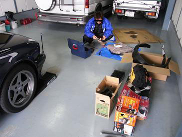
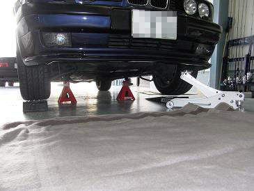
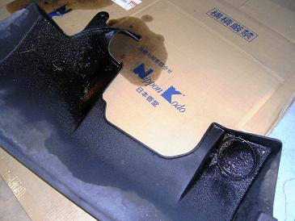
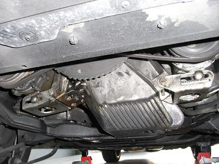
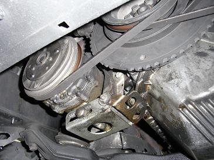
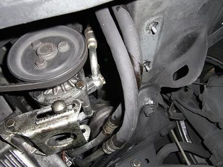
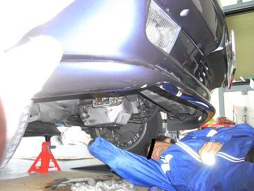
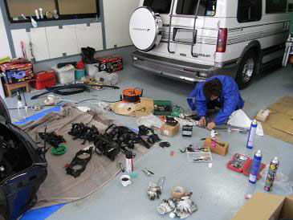
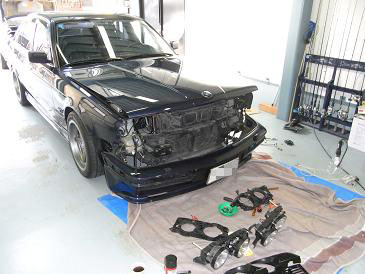

 今回はジャッキアップする必要があるので、準備を。
|
 スロープでジャッキの入る高さを確保して、ジャッキアップ→ウマで固定します。 この後、アルタァさんの悲鳴が・・・（笑
|
  アンダーカバーを外すと・・・！ オイルが・・・ 湿りどころかオイル溜まってるし〜（笑 オイルフィルターのパッキンまで（爆 それでは、悲惨な下周りをアップでいきましょう！＾＾
|
  うわぁ〜！！ 人のを笑ってると・・・ 明日は我が身なのでこの辺で（笑
|
 悔しがりながら綺麗にするアルタァさん 原因はオイルパンボルトの緩みとオイルクーラーの配管でした。 ボルトはちょっとした緩みじゃなく、360℃回締めれるぐらい緩んでました・・・（汗 ガスケットが痩せてきたのか、、振動で緩んだのか。。 Ｍゴロー号もジャッキアップすると、、何箇所か緩んでいました。 ココは良く緩むのか？ Ｍ３０な皆様、一度ご確認をm(_~_)m そして、本来の目的のアース線を交換します。
|
  他にもタイヤハウスインナーカバーを交換したり、ヘッドライトのフレームを交換したり。 メンテ三昧な１日でした！
|